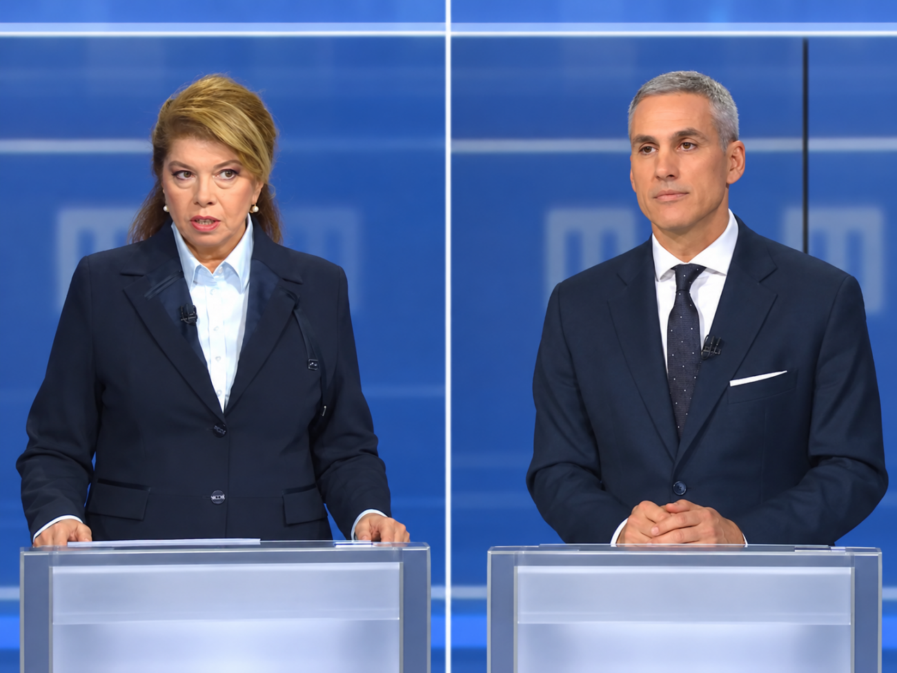

Обзор
Дебатът в цифри и аргументи
Илияна Йотова – Андрей Гюров · БНТ · 29.10.2026 · анализирани 105:11
Дебатът е структуриран в няколко тематични блока, водени от модератора, и завършва с взаимни въпроси между кандидатите, кратки лични въпроси и заключителни думи. Настоящият обзор описва аргументите по теми и измерва колко често водещата е трябвало да се намесва.
1. Структура на дебата
| № | Раздел | Време | Реплики | Думи |
|---|
| 1 | Встъпление | 0:00:20–0:01:27 | 7 | 133 |
| 2 | Избирателна активност и партийна подкрепа | 0:01:31–0:07:02 | 11 | 732 |
| 3 | Външна политика и сигурност: война и мир, Черно море | 0:07:05–0:34:17 | 52 | 3843 |
| 4 | Национален суверенитет и съюзническо присъствие | 0:34:19–0:40:21 | 18 | 834 |
| 5 | Отношения със Скопие | 0:40:22–0:46:49 | 12 | 913 |
| 6 | Институции, Конституция и служебни кабинети | 0:46:54–1:05:46 | 28 | 2612 |
| 7 | Бюджет, цени и инфлация | 1:05:47–1:19:46 | 38 | 2012 |
| 8 | Взаимни въпроси между кандидатите | 1:20:02–1:37:33 | 39 | 2273 |
| 9 | Лични въпроси | 1:37:43–1:48:33 | 73 | 1347 |
| 10 | Заключителни думи | 1:48:37–1:50:27 | 4 | 271 |
| 11 | Закриване | 1:50:36–1:51:18 | 6 | 93 |
2. Аргументите по теми
Встъпление
Встъпление и поздравления. Водещата обявява правилата — равно време, еднакви условия и възможност кандидатите да си задават въпроси. Аргументи тук няма.
Избирателна активност и партийна подкрепа
Първият въпрос е за рекордно ниската избирателна активност и за това от кои партии кандидатите търсят подкрепа. Спорът бързо се измества от активността към въпроса чия кандидатура е по-независима.
Йотова:
- Благодари на гласувалите на 25 октомври и призовава за по-висока активност на балотажа (t011).
- Изрежда подкрепилите я формации — «Прогресивна България», БСП, ВМРО, НДСВ, партията на доктор Дирклиев — и широк инициативен комитет (t014).
- Пита Гюров какво е обещал на формациите, потърсили подкрепата на ДПС Ново начало и на Пеевски (t014).
Гюров:
- Ниската активност е следствие от кампания, водена със страх от война; отказва да плаши избирателите (t009).
- Президентската институция е «пиано в хола» — хората го заобикалят, но никой не свири на него; президентът може да събира таланта на нацията и да е противотежест на властта (t009).
- Кандидатурата му е гражданска, с Кандев; в комитета няма политически лидери и представители на държавна сигурност, за разлика от комитета на Йотова (t016).
- Твърди, че никога не е търсил подкрепа от партийни централи и лидери (t018).
Външна политика и сигурност: война и мир, Черно море
Най-дългият блок: външна политика и сигурност — войната в Украйна, Черно море, противодроновата отбрана и отношенията със Скопие. Двамата спорят дали България трябва да е «равнопоставен член» с ясна национална позиция или страна, която изгражда коалиции и присъства, когато решенията се пишат.
Йотова:
- България е равнопоставен член на ЕС; президентът представлява държавата и трябва да изразява категорична национална позиция, а не да казва «да» на всичко (t022).
- Още през септември поставя в ООН въпроса за сигурността на корабоплаването в Черно море; свиква Консултативния съвет за национална сигурност и предлага мораториум върху бойните действия между шест държави — България, Румъния, Турция, Грузия, Украйна и Русия (t024).
- Мир може да има само чрез преговори, включително с Русия; припомня Минск-1, Минск-2, «Норманди 4» и Истанбул, както и диалога на Финландия и Норвегия с Путин (t047, t049).
- Киевското споразумение не е «отворена врата», а поети ангажименти, включително участие в «Коалиция на желаещите»; категорично отрича български войници да отиват в Украйна (t031, t035, t059).
Гюров:
- Три принципа: границите не се променят със сила; трябва да се работи със съюзници и да се изграждат коалиции преди да са нужни; по-добре да си в стаята, когато се пише черновата, отколкото да налагаш вето (t020).
- Френското предложение за Скопие е пример, че въпросът може да се обърне — не България срещу ЕС, а Северна Македония срещу ЕС (t020).
- Пожеланието за мораториум не е отбранителна стратегия; нужни са противодронова защита, противоракетен щит и навременни решения, а Консултативният съвет е свикан късно (t026).
- Киевското споразумение е рамка, която отваря врата за българската индустрия; договорът с Боташ, напротив, е врата, която не може да се затвори и струва около половин милион на ден (t068, t070).
Сблъсъкът: Основният сблъсък е дали подкрепеното от Йотова «снишаване» и мораториум носят сигурност, или дали сигурността идва от възпиране и присъствие в съюзническите решения. Вторият сблъсък е около Киевското споразумение — рамка срещу поети ангажименти — и около това кой носи отговорност за закъснелите решения по Черно море.
Национален суверенитет и съюзническо присъствие
Въпросът на водещата обръща темата навътре: къде е балансът между националния суверенитет и ангажиментите към ЕС и НАТО, и биха ли подкрепили допълнителни съюзнически сили у нас. И двамата отговарят утвърдително, но веднага се сблъскват за това какво точно е поела България с Киевското споразумение.
Йотова:
- Отговорът ѝ е кратък: България вече участва в такива формати и изпълнява ангажиментите си към НАТО (t072).
- Твърди, че в Киев Гюров е поел ангажимент за участие в Коалицията на желаещите, чийто предмет е обучение на войници за мироопазващи сили (t078).
- Настоява, че предметът на дейност е само подготовката на мироопазващи сили, и пита защо тогава България е част от коалицията (t080, t082).
- Казва, че българската индустрия «се развива твърде добре» — с правителствените проекти по програмите на НАТО и «Европейски щит» и с военно-промишления комплекс (t086).
Гюров:
- Припомня Варшавския договор: стратегията е била да се издържи 24 часа до идването на съветските войски, докато сега България е в «най-силния отбранителен съюз» и разчита на съюзническото присъствие (t074).
- Твърди, че български войници няма да има в Украйна — нито преди, нито по време, нито след войната — и че има две решения на Народното събрание плюс предложена декларация (t077, t079).
- Обръща примера ѝ: държавниците са осуетили излизането от коалицията, изолацията и прекъсването на развитието на индустрията (t084).
- Описва индустрията като «под напрежение» — цени, енергоносители, изолация, спрени железопътни маршрути към Букурещ и Калотина; четири от всеки десет българи работят в производство, търговия и транспорт (t088).
Сблъсъкът: Спорът е за смисъла на едно и също споразумение: Йотова чете в него поет ангажимент за Коалицията на желаещите, Гюров — рамка, която не изпраща войници, но отваря врата за българската индустрия. Под него тече втори спор — дали България печели или губи от присъствието си в съюзническите формати; двамата дори описват състоянието на индустрията с противоположни думи (t086 срещу t088).
Отношения със Скопие
Външната политика се затваря със Скопие. Въпросът е каква да бъде стратегията към РСМ. Спорът бързо се измества от политиката към историята: кой е спасил българската позиция около френското предложение през 2022 г. и кой е бил на път да я предаде.
Йотова:
- Стратегията трябва да остане същата; членството на РСМ в ЕС не е двустранен, а европейски въпрос (t090).
- Нищо не се е подобрило от подписването на споразумението — език на омразата, преследване на хора с български корени, случаят «Пендиков» (t090).
- При Кирил Петков позицията е била «спасена в 12 без 5»; президентската институция първа е поставила въпроса за правата на българите в РСМ (t090).
- Предизвиква Гюров да разкаже «стъпка по стъпка» как е изработено предложението (t093) и го пита защо тогава не се е защитил пред парламентарните групи (t095).
Гюров:
- Той е бил председател на парламентарната група и вносител на френското предложение; «кога сме искрени — когато атакуваме опонентите, или когато виждаме, че действията са помогнали» (t092).
- Българските позиции са влезли в споразумението и така са станали европейска позиция — българите да бъдат вписани в Конституцията на РСМ (t094).
- Обръща примера: държавниците са осъдили излизането от коалицията и изолацията, а не подписването (t096).
- «Фактите са, че сега имаме споразумение, което всички подкрепят — включително тези, които тогава го нападаха» (t099).
Сблъсъкът: Не за съдържанието на споразумението, а за заслугата и вината за него. Йотова разказва историята като спасена позиция; Гюров — като успешно прокарана европейска позиция, чиито противници днес я защитават.
Институции, Конституция и служебни кабинети
Отношенията между институциите: домовата книга за служебните кабинети и правомощията на президента. Въпросът е дали Йотова отново би предложила Гюров за служебен премиер — и прераства в спор за това кой носи отговорност за кабинета и дали президентът трябва повече власт.
Йотова:
- «Ако трябва да влезем в машината на времето — да»; половината имена в домовата книга не са били съвместими със законодателството (t102).
- Иска «тази позорна домова книга» да бъде премахната и правилата за служебния кабинет да се огледат (t114).
- Критикува управлението на Гюров: по негово време цените и инфлацията са скочили най-много, а «щабът за цените» е останал на хартия (t114, t117).
- Отказва да отговаря за «концентрация на власт»: «това не е вашият въпрос» (t127).
Гюров:
- Поел е отговорността за кратък мандат, провел е честни избори и би го направил отново (t104).
- Не би инициирал конституционни промени, но Конституцията трябва да има контрол и баланс; примерът с Боташ показва защо (t110).
- Обяснява конституционния дизайн: парламентарна република, президентът и Конституционният съд като граница пред изпълнителната власт (t112).
- Отрича тайни договорки; като президент ще подкрепя правилните решения и ще налага вето при нарушаване на правата (t125).
Сблъсъкът: Домовата книга е тест за характера на президентската институция: за Йотова тя е позорна и трябва да изчезне, за Гюров е свършила работата си и доказва, че системата е проработила. Под него тече и спорът за цените и инфлацията — същият, който избухва в пълна сила в s07.
Бюджет, цени и инфлация
Бюджетът, цените и инфлацията. Спорът започва с бюджета за 2026 г. — кой го е скрил, кой е оставил дефицит и какво е направил служебният кабинет, — и минава през фискалния резерв, Българската банка за развитие, процедурата по свръхдефицит и данъка върху свръхпечалбата.
Йотова:
- Най-големият дефект на бюджета е, че направи гражданите по-бедни, а «урязването на трудовите права» е съществен, не процедурен проблем (t130).
- Президентската институция е получила 69 становища по бюджета, само три срещу Гюров; решението за парите от ББР е било негово (t142).
- Оспорва данните за свръхдефицита: 5,8% не може да се качи за един месец; документите от 2024 г. са били неточни или скрити (t159).
- Ще гледа доходите на най-бедните, инвестициите, пенсиите и учителските заплати; не е привърженик на малките дефицити (t159).
- Референдумът е бил поискан, за да се каже на хората истината за трудните процеси (t165).
Гюров:
- Фискалният резерв е бил 6,8 млрд. евро; парите от ББР са били върнати в бюджета, а не в «черната каса на властта» (t141).
- Мерките за цените са подпомогнали най-нуждаещите се и най-застрашените сектори; «затова и нямаше инфлация», а МВФ ги е давал за пример (t121).
- Бюджетът е бил скрит преди изборите; тежест от около 2 млрд. евро и 1,5 млрд. «срещу празни графи» (t155).
- Референдумът е противоконституционен според Конституционния съд; данъкът върху свръхпечалбата е еднократен, а разходите не са (t166).
Сблъсъкът: Един и същ бюджет се чете по два начина: като спасение на държавата от свръхдефицит и като удар по доходите. Под числата стои спорът за наследството — кой е оставил по-добри финанси, служебният кабинет на Гюров или редовното правителство.
Взаимни въпроси между кандидатите
Взаимни въпроси: по два за всеки. Гюров пита за свободата на медиите и после за помилвания; Йотова го пита за негово твърдение за «възродителен процес». Тя отговаря с процедурата по помилване и с обвинение, че кампанията му е изградена върху лъжи; накрая пита него за тона на кампанията.
Йотова:
- Свободата на медиите означава всеки да изказва мнение; разказва как е видяла министър-председател на «часовника» преди централната емисия (t175).
- Пита Гюров за твърдението му, че отново има «възродителен процес», и го пита съзнава ли колко е опасно такова твърдение (t180).
- Документите по помилването е предоставила лично на прокуратурата; комисията се съставя по закон; решението е по хуманитарни причини (t191, t200).
- «Изградихте цялата си кампания върху лъжи»; обвинява го, че злоупотребява с темата, защото не е намерил друга (t191, t200).
- Пита го дали е съгласен с кампанията «с демагогия, с лъжи, с лични нападки… през тролове» (t197).
Гюров:
- Медиите като четвърта власт трябва да са коректив; пресцентърът на Министерския съвет не бива да се използва в кампания (t184).
- Отрича да е говорил за «възродителен процес»: казал е, че борбата с олигархията е закъсняла (t184).
- Иска извинение от Йотова за помилванията на наркотрафиканти (t190).
- Кампанията му е била позитивна; загубата от 900 000 гласа е следствие от «мръсната кампания» на опонента (t202).
Сблъсъкът: Двамата си разменят едни и същи обвинения — манипулация и мръсна кампания — и нито едно не се доказва в студиото. Това е най-личната част от дебата и единствената, в която звучи думата «лъжа» от двете страни.
Лични въпроси
Лични въпроси: с какво са се събудили, идеалното щастие, любима книга, поезия, политик, на кого се възхищават, опората в трудни моменти, вицепрезидентските кандидати и как искат да ги запомнят.
Йотова:
- Събудила се е «с много ведро чувство»; щастието е семейството, съпругът, внукът (t209, t211).
- Чете поезия — започва с Маргарита Петкова почти всяка сутрин; поезията не се помни наизуст, а се разбира (t218, t222).
- Възхищава се на Любен Корнезов — създател на Конституцията, прям и честен човек (t226, t228).
- Опората ѝ е майка ѝ; баща ѝ е убит твърде рано (t234, t238).
- Иска да я запомнят като миротворец, но и като боец «винаги за България» (t260).
Гюров:
- Събудил се е «с надежда за нещо, което предстои»; щастието е «хубава книга, топла къща, сняг» (t207, t213).
- Препрочита «Аристократ в Москва» заради това как човек трябва да се пренастройва към промените в съдбата и да отговори достойно (t215, t217).
- Възхищава се на Марк Карни, защото «не се поколебава да казва истината» (t230, t232).
- Опората му е съпругата — 32 години заедно, от студентската скамейка (t240, t242).
- Иска да го запомнят като президент-миротворител и да върне доверието в институцията (t252).
Сблъсъкът: Личната част е и най-спокойната, и най-изненадващата: двамата отговарят почти еднакво за семейството и различно за политиката — Корнезов срещу Карни. Спорът се връща само в края, когато Йотова иска семейството ѝ да не бъде замесвано (t276).
Заключителни думи
Финални думи по една минута, отново по жребия на ЦИК — първи е Гюров.
Йотова:
- Благодари за активността; балотажът е на 1 ноември, ден на исторически събития и личности; призовава да гласуват «с номер 25» (t282).
Гюров:
- Припомня откритата кампания, стотиците градове и десетките хиляди хора; 78 дни в служебното правителство; призовава да гласуват «Гюров – Кандев», номер 4 (t280).
Сблъсъкът: Няма спор — само две различни версии на една и съща кампания: «слушахме хората» срещу «ще гласуваме за България».
Закриване
Закриване: водещата благодари на кандидатите и на зрителите и пита как искат да завърши дебатът. Двамата си подават ръка и си разменят пожелания.
Йотова:
- Пожелава успех на Гюров — «така както ви пожелах първия ден, в който ви назначиха служебен министър-председател» (t287).
Гюров:
Сблъсъкът: Няма.
3. Кой колко говори
| Реплики | Думи | Време (прибл.) | Дял от думите |
|---|
| Поли Златарева | 128 | 2383 | 17:01 | 16% |
| Илияна Йотова | 83 | 7098 | 47:46 | 47% |
| Андрей Гюров | 77 | 5582 | 40:24 | 37% |
4. Намеси на водещата
Броят се само намесите, насочени към кандидат: вложени реплики в рамките на неговото изказване и отделни напомняния за времето веднага след него. Процедурните размени, в които водещата говори между двамата кандидати (напр. 0:31:07–0:31:18), не се броят тук.
| Кандидат | Намеси | От тях за време | На 10 мин. реч |
|---|
| Илияна Йотова | 6 | 2 | 1.3 |
| Андрей Гюров | 7 | 2 | 1.7 |
Общо 13 намеси към двамата кандидати за 105:11 дебат.
Намесите към Илияна Йотова
| Време | Вид | Текст | Къде |
|---|
| 0:04:20 | време | „Напомням за времето, съжалявам, но така ще ви напомням и ще ви посочвам, кога трябва да завършва вашата мисъл, тъй като трябва да следваме наистина времетраенето и трябва да следваме и реда.“ | t012 |
| 0:13:46 | време | „30 секунди.“ | t024 (вложена) |
| 0:20:33 | намеса | „Госпожо, и от това?“ | t035 (вложена) |
| 0:21:48 | процедура | „Една реплика и не повече моля.“ | t038 (вложена) |
| 0:36:29 | процедура | „Имате секунди, имате секунди въобще и възможност.“ | t078 (вложена) |
| 0:47:26 | процедура | „А ако не трябва да влезете?“ | t102 (вложена) |
Намесите към Андрей Гюров
| Време | Вид | Текст | Къде |
|---|
| 0:06:55 | време | „Вие имате още 10 секунди.“ | t017 |
| 0:16:03 | процедура | „Само секунда, защото трябва да спазя правилата. Имат още време. Имат още 45 секунди. Желателите да ги използват?“ | t026 (вложена) |
| 0:28:57 | подкана | „Какво искате да кажете с това?“ | t051 (вложена) |
| 0:34:17 | намеса | „Край, свърши.“ | t070 (вложена) |
| 0:48:59 | процедура | „Разочарование или недоверие има в момента в тона между вас, беше въпросът ми, господин Гюров, извинявайте.“ | t108 (вложена) |
| 1:11:15 | процедура | „Да ви върна на този, моля да...“ | t153 (вложена) |
| 1:13:20 | време | „Имате още 30 секунди. Искате ли да ги използвате?“ | t156 |
5. Прекъсвания между кандидатите
| Време | Кой прекъсва | Кого | Текст (начало) |
|---|
| 0:18:51 | Йотова | Гюров | „Защото вашата теза, господин Гюров, е за моментно прекратяване на военните действия, време…“ |
| 0:32:06 | Гюров | Йотова | „Това е абсолютна манипулация.…“ |
| 0:32:35 | Йотова (?) | Гюров | „Това, което виждаме, са близо 400 милиона долара, които ние дължим и които ще докарат до ф…“ |
6. Как са изчислени числата
- Времето с думата се изчислява от началото на всеки ред от преписа до началото на следващия, с таван от 12 секунди.
- При едновременна реч времето се брои на този, на когото е приписан редът.
- Броят на намесите зависи от атрибуцията; всяка е изброена с време и текст.
- Измерена е само обработената част от дебата (секции 1–3).